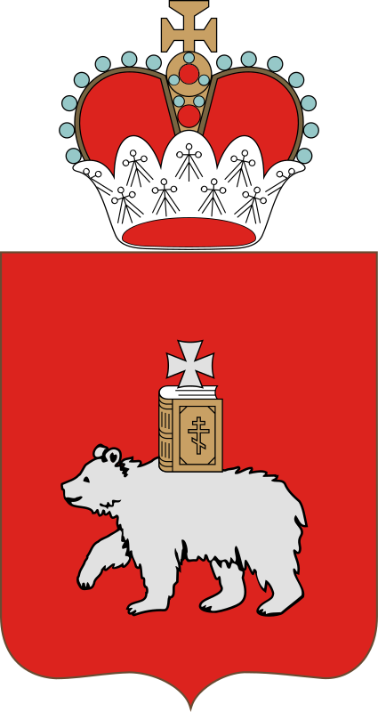
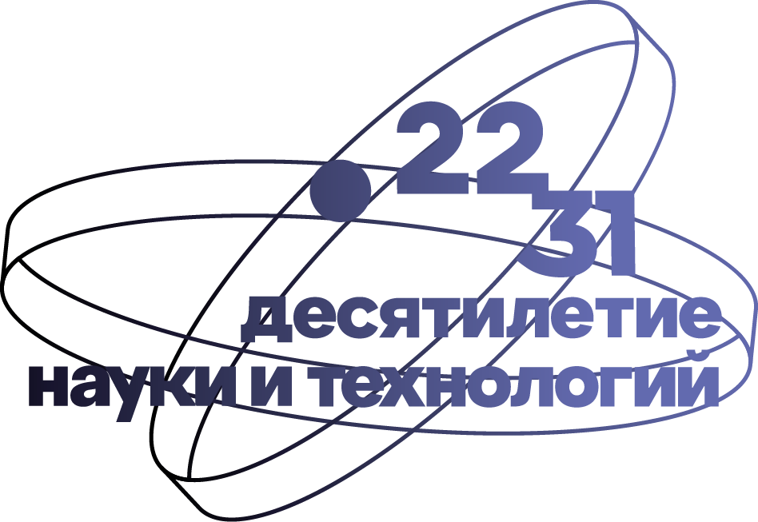
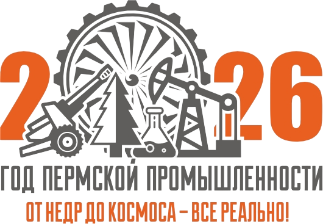
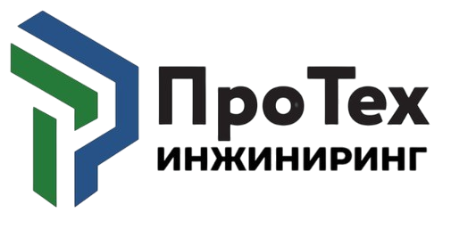
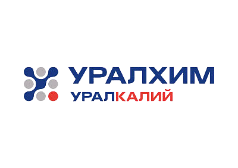
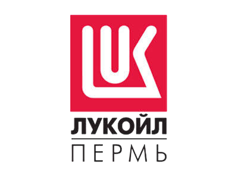

Горный институт УрО РАН приглашает
70 лет
Пермской школе
рудничной аэрологии
Дата01 октября 2026
МестоАктовый зал ПНИПУ
70
О событии 01
Сохраняем историю.
Создаём будущее.
Приглашаем Вас принять участие в торжественном мероприятии, посвящённом 70-летнему юбилею Пермской школы рудничной аэрологии.
В программе — пленарное заседание с историческими докладами о становлении ведущих научных школ аэрологии, развитии институтов и горнодобывающей промышленности. На профильных круглых столах участники обсудят актуальные вопросы отрасли через призму опыта ведущих учёных и молодых специалистов. Завершит день торжественный ужин.
70лет научной
школе
школе
7исторических
докладов
докладов
2дня научной
программы
программы
Программа 02
Два дня
вместе
Время указано местное, Пермь
10:00–13:40
Пленарное заседание
Приветственное слово
История развития горных заводов Урала
История развития санкт-петербургской школы аэрологии и горной теплофизики
История развития московской школы аэрологии и программных комплексов
Кофе-брейк
Школа аэрологии в Пермском политехе
Развитие калийной промышленности Верхней Камы
Развитие калийной промышленности Беларуси
Становление ГИ УрО РАН
Кофе-брейк
14:30–16:00
Актуальные вопросы аэрологии
01 Провокационные вопросы рудничной вентиляции
02 «Красные линии» теплового режима рудников
03 Молодёжный ответ на научные вопросы аэрологии
Завершение дняТоржественный ужин
02 октября
Семинар Семёна Григорьевича по теплофизике
Время и подробности второго дня будут опубликованы дополнительно.
Регистрация 03
Будем рады
видеть Вас
Заполните форму участника. Ответ будет сохранён в Google Forms и передан организаторам мероприятия.
Открыть оригинальную Google Форму ↗Спикеры 04
Программа формируетсяСкоро представим
Скоро представим
наших спикеров
При поддержке 05
Организации
участники






Место проведения 06
В самом сердце
Перми
ПНИПУ
Пермский национальный исследовательский политехнический университет
Комсомольский проспект, 29
Пермь, 614990
Контакты 07